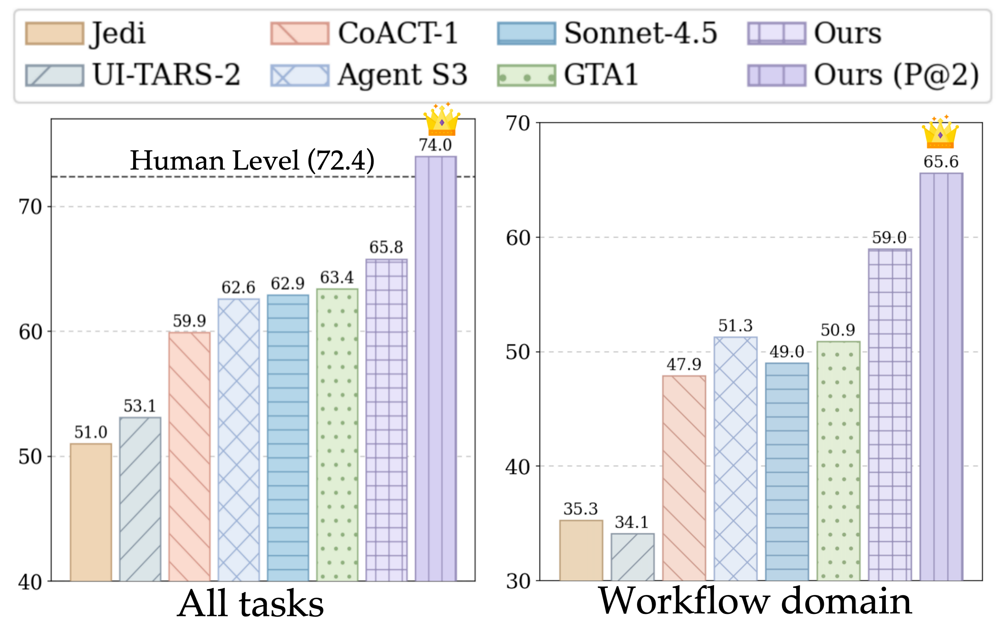
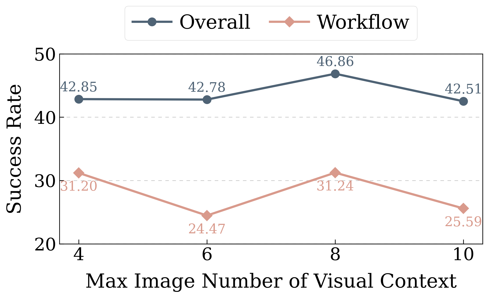

👏 Congradulations!
OS-Symphony has achieved a score of 65.8 on the OSWorld Official Evaluation (using GPT-5 + UI-TARS-1.5-7B with 50 steps). As of 2026/01/04, this ranks 5th overall, 3rd among methods without multiple rollout, and 1st under the 50-steps constraint!
Note: The results reported in our paper and this webpage are lower due to limitations of the VM environment. While you are allowed to compare against the metrics in our paper, we highly encourage comparing against the official evaluation results.
We propose OS-Symphony, a robust desktop CUA framework that organically integrates an Orchestrator, a Reflection-Memory Agent, and specialized Tool Agents through a unified Reflection Message Protocol, minimizing error accumulation while maximizing overall capability.
OS-Symphony is built around the following components, forming a complete closed reasoning loop:
- §Orchestrator: Acts as the system's brain, responsible for task understanding and action prediction.
- §Reflection-Memory Agent: Compresses execution trajectories to maintain long-term memory and facilitates trajectory-level reflection, ensuring the long-horizon robustness.
- §Versatile Tool Agents: Consists of Ground, Code, and Search Agent, where the Search Agent implements a "SeeAct" paradigm that enables agents to autonomously acquire knowledge in a human-like manner within a independent sandboxed Chrome environment, and then generate a step-by-step, up-to-date tutorial.

OS-Symphony is a cross-platform CUA supporting three mainstream OSs, achieving a omni-CUA solution. It achieves success rates of 65.8 on OSWorld (100-step limit), 63.6 on WindowsAgentArena (50-step limit), 46.0 on MacOSArena (50-step limit), all setting new SOTA results.
We will release all code and more details. We hope OS-Symphony can inspire and boost future research in building GUI agents.
 Click to jump to each section.
Click to jump to each section.
OS-Symphony Framework

OS-Symphony comprises three synergistic components: an Orchestrator, specialized Tool Agents, and a Reflection-Memory Agent (RMA). In the case shown above, the Orchestrator first interprets feedback from the RMA, which identifies execution stagnation caused by a Chrome version mismatch between the task environment and the VLM's pre-training knowledge, together with a Lack of Tutorial error. It then invokes the Searcher to retrieve a relevant tutorial, and following this guidance, successfully completes the task, achieving a closed-loop self-improvement cycle.
Reflection-Memory Agent
Current CUA frameworks suffer from intent drift and insufficient error awareness when executing long-horizon tasks, due to the lack of a concise yet effective memory mechanism. To address this, we introduce a Reflection-Memory Agent (RMA) that manages a milestone-driven long-term memory, which is primarily responsible for alleviating the contextual memory overhead of the Orchestrator.

Multimodal Searcher
We introduce a "Visual-Centric Search as a Tool" paradigm, where our Searcher employs a VLM-driven "SeeAct" strategy to directly interact with rendered pages and synthesize tutorials. This approach addresses two critical deficiencies in RAG for CUAs. First, it retains the vital visual context often lost in text-based parsing. Second, it resolves the misalignment between static retrieval and dynamic needs: unlike standard RAG, our method treats search as an on-demand capability, ensuring the agent actively seeks knowledge only when execution gaps arise.
An example is shown below.

Main Experiments
OSWorld
We first evaluate OS-Symphony on OSWorld, which comprises 369 real-world tasks across five domains in a Linux environment. Following common practice, we exclude the 8 Google Drive tasks, resulting in a final set of 361 tasks.
The results are shown in Table 1
| Model |
Steps |
Success Rate |
| OS |
Office |
Daily |
Professional |
Workflow |
Avg. |
| OpenCUA-72B |
15 |
50.00 |
38.45 |
46.10 |
71.43 |
13.91 |
39.03 |
| OpenCUA-72B |
50 |
45.83 |
42.73 |
53.79 |
75.51 |
22.31 |
44.52 |
| OpenCUA-72B |
100 |
61.13 |
44.73 |
49.95 |
72.58 |
22.16 |
44.91 |
| UI-TARS |
100 |
41.67 |
50.42 |
55.69 |
51.02 |
14.66 |
41.85 |
| UI-TARS-2 |
100 |
41.67 |
61.11 |
62.12 |
61.22 |
34.13 |
53.10 |
| DeepMiner-Mano-7B |
100 |
50.00 |
39.28 |
44.87 |
73.47 |
17.20 |
40.15 |
| DeepMiner-Mano-72B |
100 |
66.67 |
63.22 |
52.51 |
83.67 |
24.41 |
53.91 |
| Claude-Sonnet-4.5 |
50 |
70.83 |
62.41 |
57.64 |
63.27 |
46.99 |
58.10 |
| Claude-Sonnet-4.5 |
100 |
70.83 |
72.59 |
61.35 |
63.27 |
49.54 |
62.84 |
| UiPath w/ GPT-5 |
50 |
73.91 |
49.52 |
62.12 |
71.43 |
37.30 |
53.69 |
| CoACT-1 w/ GPT-5 |
50 |
70.83 |
60.65 |
54.09 |
69.39 |
42.37 |
56.39 |
| CoACT-1 w/ GPT-5 |
100 |
75.00 |
62.93 |
57.94 |
71.43 |
47.87 |
59.93 |
| CoACT-1 w/ GPT-5 |
150 |
75.00 |
62.93 |
61.78 |
71.43 |
47.87 |
60.76 |
| GTA1 w/ GPT-5 |
100 |
79.17 |
63.91 |
62.56 |
79.59 |
50.91 |
63.41 |
| Agent S3 w/ Qwen3-VL-32B-Instr. ♣ |
50 |
50.00 |
36.67 |
50.62 |
61.22 |
21.96 |
40.11 |
| Agent S3 w/ GPT-5-Mini ♣ |
50 |
62.50 |
54.62 |
46.67 |
44.90 |
37.04 |
47.58 |
| Agent S3 w/ GPT-5 |
100 |
77.50 |
66.46 |
61.23 |
69.80 |
51.37 |
62.63 |
| OS-SYMPHONY w/ Qwen3-VL-32B-Instr. |
50 |
58.33 |
40.94 |
53.54 |
75.10 |
31.24 |
46.86 |
| OS-Symphony w/ GPT5-Mini |
50 |
73.68 |
58.17 |
61.39 |
75.00 |
47.37 |
58.05 |
| OS-Symphony w/ GPT-5 |
50 |
75.00 |
64.85 |
61.19 |
69.23 |
54.86 |
63.61 |
| OS-Symphony w/ GPT-5 |
100 |
75.00 |
65.70 |
63.75 |
69.23 |
58.99 |
65.84 |
Table 1: Performance on OSWorld. ♣ indicates the results are reproduced by us.
As shown in Table 1, when using GPT-5, OS-Symphony achieves new SOTA performance under maximum step limits of 50 and 100, scoring 63.6 and 65.8, respectively. This represents an absolute improvement of approximately 3% over the primary baseline, 100-step Agent S3 with GPT-5, demonstrating the effectiveness of our framework.
WindowsAgentArena
To evaluate generalization across widely used operating systems, we additionally evaluate OS-Symphony on WindowsAgentArena.
The results are shown in Table 2
| Model |
Steps |
Success Rate |
| Office |
Web |
System |
Code |
Media |
Utilization |
Avg. |
| Qwen3-VL-32B-Instr. |
50 |
19.05 |
49.66 |
54.17 |
21.05 |
42.19 |
25.00 |
34.61 |
| UI-TARS-1.5-7B |
50 |
- |
- |
- |
- |
- |
- |
42.10 |
| UI-TARS-2 |
50 |
- |
- |
- |
- |
- |
- |
50.60 |
| Agent S3 w/ GPT-5 |
50 |
- |
- |
- |
- |
- |
- |
54.10 |
| Agent S3 w/ GPT-5 |
100 |
- |
- |
- |
- |
- |
- |
56.60 |
| OS-Symphony w/ Qwen3-VL-32B-Instr. |
50 |
26.19 |
46.33 |
75.00 |
47.37 |
27.90 |
41.67 |
43.12 |
| OS-Symphony w/ GPT-5-Mini |
50 |
42.86 |
73.00 |
79.17 |
68.42 |
48.66 |
66.67 |
61.50 |
| OS-Symphony w/ GPT-5 |
50 |
54.76 |
73.00 |
75.00 |
42.11 |
70.09 |
75.00 |
63.63 |
Table 2: Performance on WindowsAgentArena benchmarks.
As shown in Table 2, OS-Symphony achieves a new SOTA score of 63.6 on WindowsAgentArena using GPT-5 with 50-step, outperforming the 50-step and 100-step Agent S3 baselines by 9.5% and 7.0%, respectively, with even the GPT-5-Mini variant demonstrating superior efficiency by exceeding the 100-step Agent S3 with GPT-5 by 4.9%.
MacOSArena
Furthermore, we evaluate OS-Symphony on MacOSArena, a particularly demanding benchmark where both proprietary and specialist models struggle to achieve even modest success rates. Due to the cost constraint, we didn't use GPT-5 as the backbone.
The results are shown in Table 3
| Model |
Steps |
Success Rate |
| Single-Apps |
Multi-Apps |
Avg. |
| GPT-4o |
50 |
3.57 |
0.00 |
1.59 |
| Claude-3.7-Sonnet |
50 |
14.29 |
2.86 |
7.94 |
| Aguvis-72B |
50 |
0.00 |
0.00 |
0.00 |
| UI-TARS-1.5-7B |
50 |
14.29 |
2.86 |
7.94 |
| UI-TARS-72B-DPO |
50 |
14.29 |
5.71 |
7.52 |
| Qwen2.5-VL-72B |
50 |
7.14 |
0.00 |
3.17 |
| Qwen3-VL-32B-Instr. |
50 |
17.86 |
0.00 |
7.94 |
| OS-Symphony w/ Qwen3-VL-32B-Instr. |
50 |
32.14 |
8.57 |
19.05 |
| OS-Symphony w/ GPT-5-Mini |
50 |
57.14 |
37.14 |
46.03 |
Table 3: Performance on MacOSArena benchmarks.
As shown in Table 3, OS-Symphony achieves a new SOTA score of 46.03 on MacOSArena, significantly outperforming the baseline models. Consequently, we can conclude that OS-Symphony delivers robust performance across all mainstream operating systems, reflecting its remarkable OS-level generalization capabilities.
Analysis
What is the Performance Ceiling of Our Model?
We conduct the Pass@K experiment. To explore the performance limits, we incrementally increased the temperature of both the Orchestrator and RMA by 0.1 at each pass. All experiments are carried out with GPT-5 + UI-TARS-1.5-7B and 100-step limit.

As shown above, OS-Symphony surpasses human performance (72.4%) at Pass@2 (74.14%) and achieves a success rate approaching 80% at Pass@5 (79.4%) on OSWorld. his demonstrates, first, that our framework has a high performance ceiling and can attain excellent results through such test-time scaling. Second, consistent with our analysis, zero-shot agentic frameworks exhibit substantial stochasticity on GUI tasks, which is evident in both our experimental results and qualitative observations. Future work should therefore prioritize improving deployment-time stability.
How Max Number of Images in Agent's Trajectory Impact Preformance?
We examine the impact of the maximum number of images within the history trajectory on performance. All experiments are carried out with Qwen3-VL-32B-Instruct and UI-TARS-1.5-7B

As shown above, the image count significantly influences the framework's effectiveness. An insufficient number of images fails to provide adequate context regarding operation history, whereas an excessive number leads to a surge in token consumption, thereby impairing the model's reasoning capabilities. The experimental results validate that our selected limit of 8 images is optimal, achieving the peak performance of 46.86.
Case Study
A case showcasing the superiority of Multimodal Searcher.
To better demonstrate the strengths of our framework, we conduct a qualitative analysis of specific success cases observed during experiments.

As shown above, after navigating to the correct page, the primary baseline, Agent S3, suffered from a lack of domain knowledge. It clicked an incorrect button, which visually resembled a settings option but was functionally irrelevant, and subsequently became trapped in an erroneous loop until the maximum step limit was exhausted. In contrast, OS-Symphony invoked the Search Agent at the first step. Through Google Chrome and a series of GUI actions, the Search Agent navigated to the Superuser website and synthesized a relevant tutorial. Guided by this external knowledge, our framework correctly identified and clicked the target button at Step 4, successfully completing the task.
Conclusion
In this work, we presented OS-Symphony, a holistic Compuuter-Using Agent (CUA) framework containing an Orchestrator that synergistically coordinates specialized modules, to address the two challenges of long-horizon robustness and domain generalization. To mitigate the visual loss inherent in extended workflows, our Reflection-Memory Agent employs a milestone-driven strategy for granular memory curation, enabling retrospective auditing to rectify errors such as intent drift and loops. Besides, we employ the Versatile Tool Agents featuring a Multimodal Searcher that transcends text-based retrieval limitations by adopting an active "SeeAct" paradigm, synthesizing high-fidelity, visually aligned tutorials for unseen environments. Extensive experiments confirm that OS-Symphony not only achieves state-of-the-art performance across diverse operating systems but also proves that complex problems can be effectively solved using open-source VLMs.